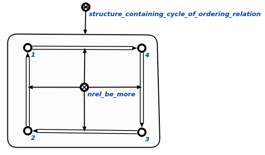

Задачей агента проверки наличия циклов в отношении порядка в рамках заданной структуры является поиск зацикленности связок всех поданных на вход отношении порядка. На вход данному агенту подается структура, которая содержит необходимые для проверки отношения порядка. Данный агент также работает с частными случаями класса отношение порядка:
- отношение строгого порядка
- отношение нестрогого порядка
В данном агенте предусмотренна возможность поиска циклов у всех отношений порядка, которые предусмотрены в базе знаний на данный момент. Для этого на вход агент стоит подать структуру, которой будет принадлежать узел отношение порядка. В заданной структуре может находится неограниченное количество отношений порядка, но в рамках каждого отдельно взятого отношения агент может выявить только один цикл.
Данный агент инициируется при условии появления в памяти вопросной конструкции, соответствующей действию. проверить наличие циклов в любом отношении порядка в рамках заданной структуры. Возможные результаты работы агента:
- Если на вход агенту в качестве первого параметра пришла не структура, то генерируется сообщение об ошибке (Wrong 1st parameter! It must be a structure.).
- Если контекст действия, поданный на вход агенту в качестве второго аргумента, не является структурой, то генерируется сообщение об ошибке (Wrong 2nd parameter! It must be a structure.).
- Если в результате работы агента были найдены циклы, то они заносятся в структуру, содержащую циклы отношений порядка . Пример найденного цикла представлен на рисунке.

- Возможно ситуация, когда цикл найден, но в результирующей структуре находятся узлы, которые не являются частью найденного цикла. Если такие узлы есть, то вызывается процедура scp-программа отсечения элементов, не являющихся частью цикла.
- Если в результате работы агента циклы не найдены, то генерируется сообщение об отсутствии циклов заданных отношений порядка в рамках базы знаний (Problematic knowledge base fragments are not found.).
TODO Поправить поиск петли. Агент при нахождении петли работает должным образом. Все элементы пятиэлементной sc-конструкции заносит в результирующую структуру.( printEl и SCn тому доказательство), но на SCg этот самый узел в результирующей структуре не распознаёт.